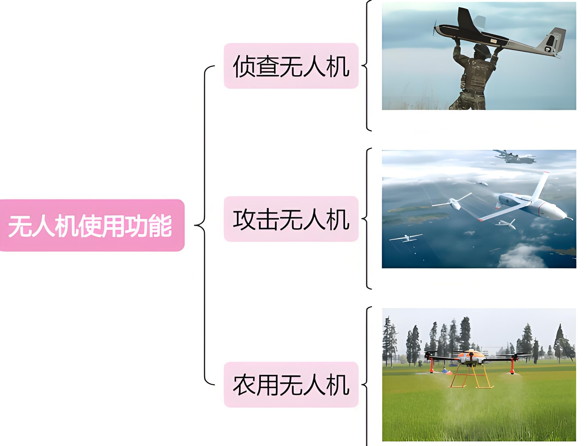
按使用功能
最常见的划分方式，课堂喜欢问“侦察 vs 农用”的差异。
- · 侦察：长航时 + 光电吊舱，重点是稳定性。
- · 农用植保：载药舱容量、喷幅与航线规划。
- · 攻击/救援：多传感器协同，需要团队配合。
UAV System Notes
这一页把无人机分类整理成图文卡片，
图像素材来自 images/无人机分类/，操作动作示意取自 images/无人机基础教学/。
题目常围绕“划分依据 + 代表机型 + 场景”展开，我把要点拆进每张卡片，内容更聚焦。

最常见的划分方式，课堂喜欢问“侦察 vs 农用”的差异。
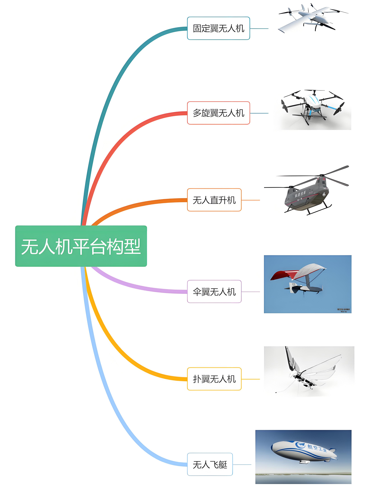
也就是机体结构，和起降方式息息相关。
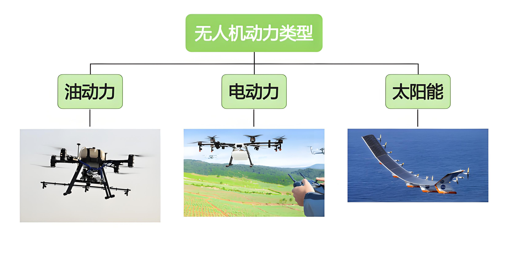
回答要点：能源密度、维护成本、噪声及续航。
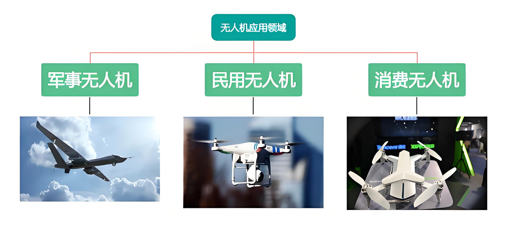
编写项目计划书时，直接以领域拆分最清晰。
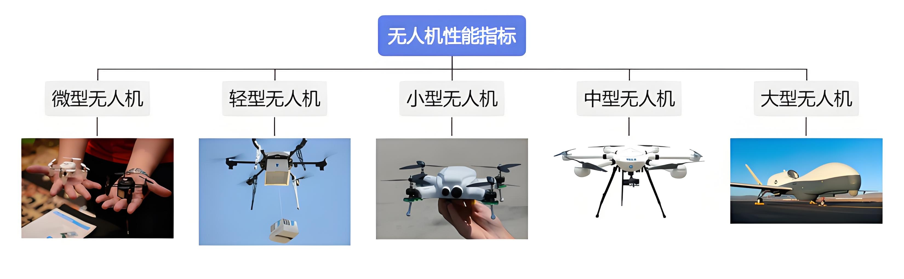
可用于写技术方案或答辩 PPT 时展示“体量 vs 任务”。
· 微/小型：课堂演示、编队飞行
· 中型：航测、行业应用的主力
· 大型：运载/运输、实验平台
指标关注点：
· 最大起飞重量
· 航程/航时与任务载荷
· 抗风等级与飞控冗余
Practice Lab
操作图取自 images/无人机基础教学/，我们把平时训练用的动作拆成 6 组，
每张图下面附上速记提示，方便直接照做。
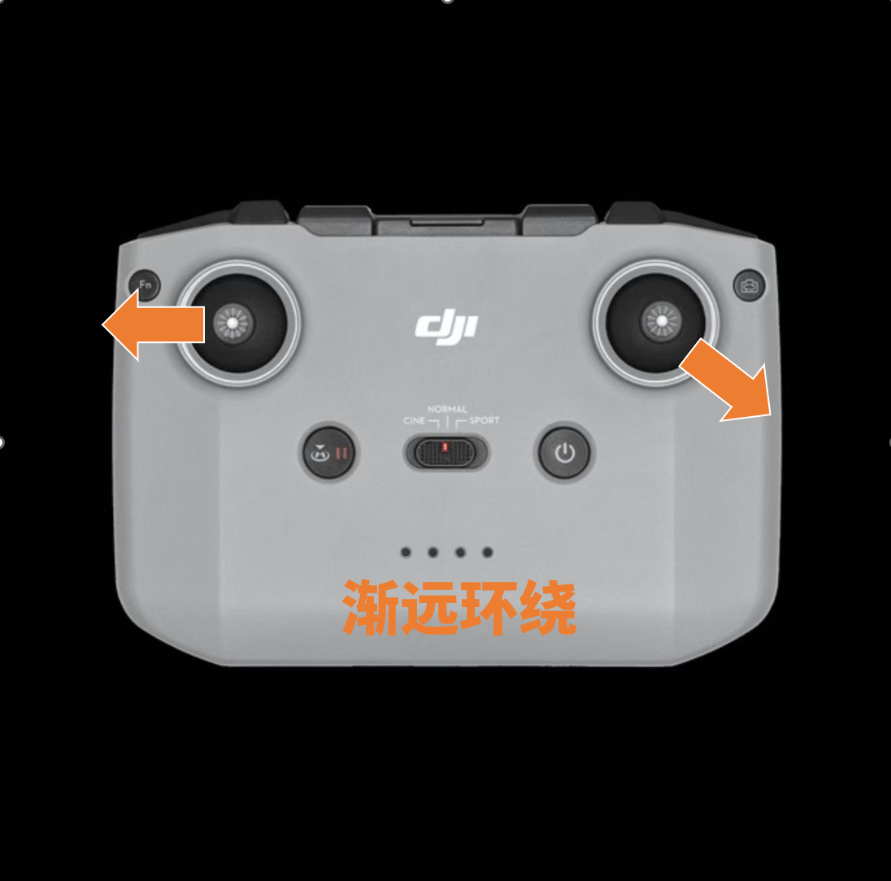
右手向外推、左手轻推偏航。保持 2 m/s 速度最稳。
提示：拉远过程中监控高度，别让前景遮挡主体。
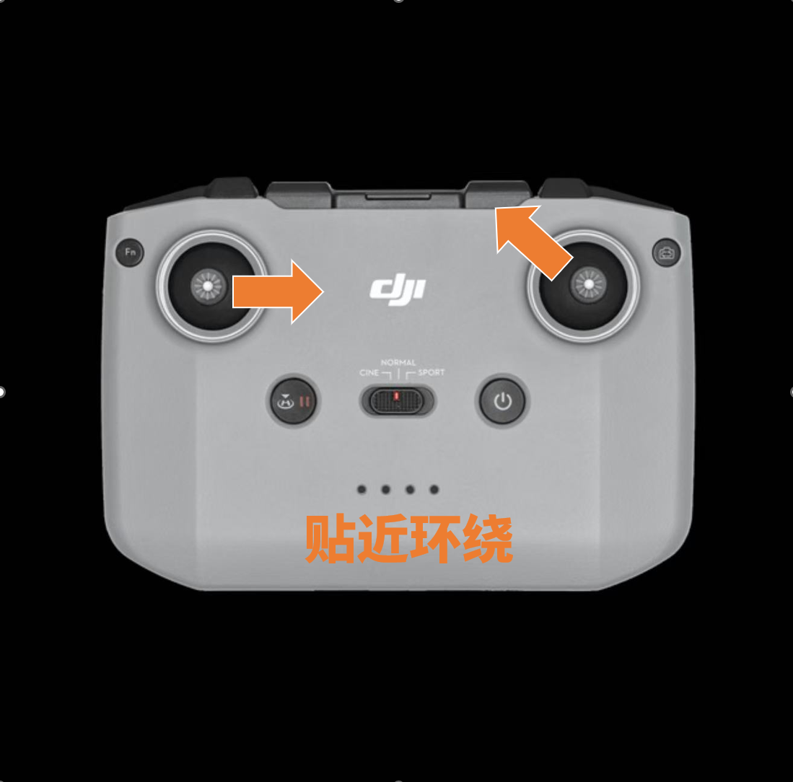
将俯仰角收窄，慢速侧飞，强调主体质感。
提示：务必提前测距，避免误差造成碰撞。
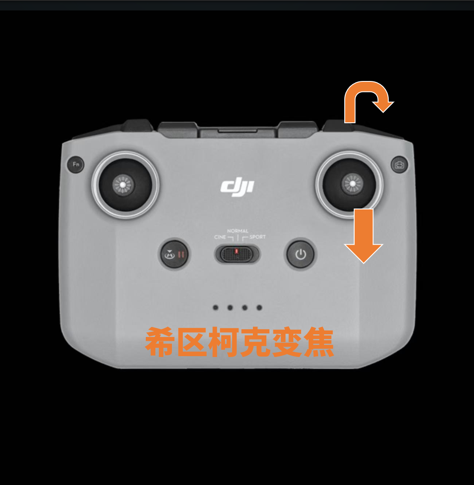
后退同时拉近镜头焦距，背景产生压缩感。
提示：用焦距控制器配合自动曝光更稳定。
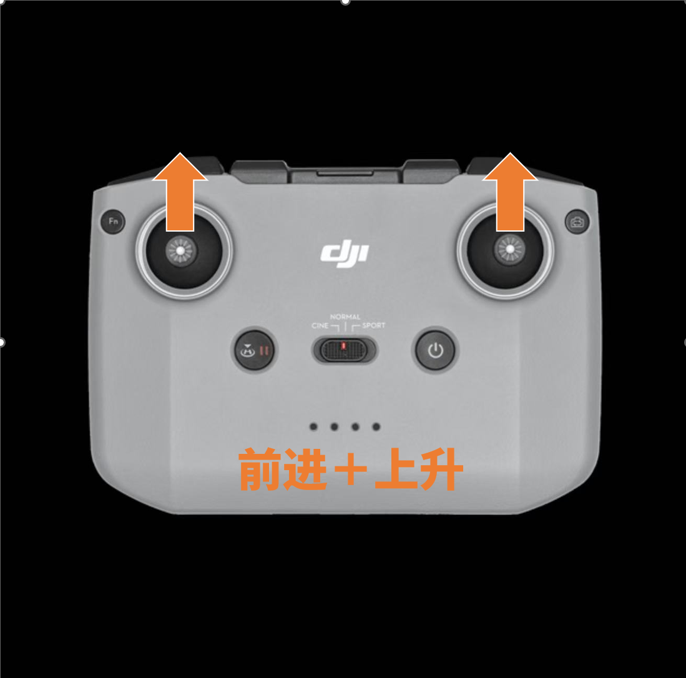
推杆前进的同时缓慢升高，用于开场镜头。
提示：姿态倾角大时要注意电机负荷。
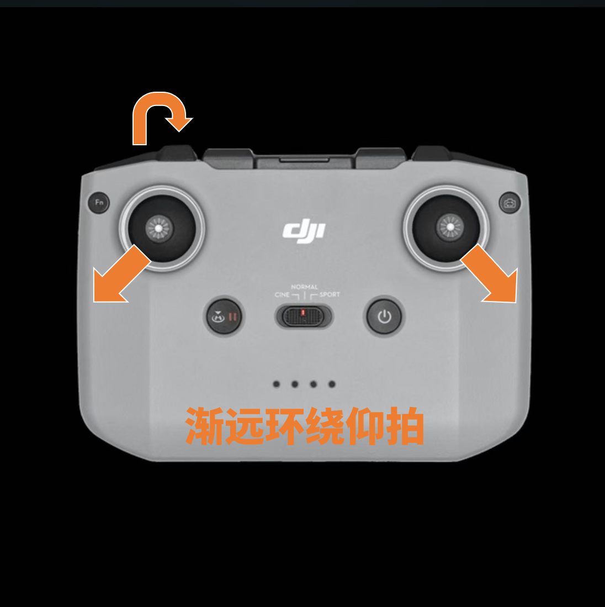
云台向上 15°，突出建筑高度和天空层次。
提示：注意直射光，必要时装 ND 滤镜。
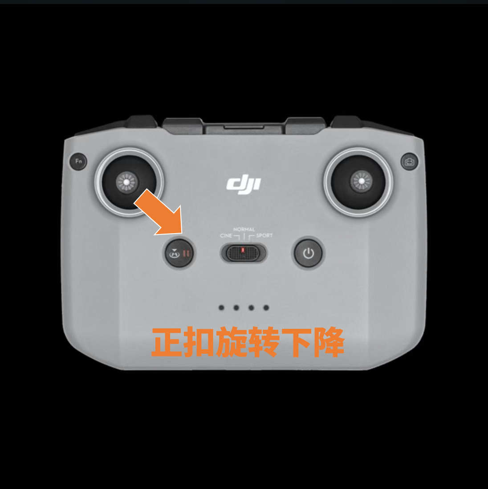
以航向为中心做螺旋下降，适合收尾镜头。
提示：提前设定高度下限，防止下洗气流不稳。
Field Notes
先展示分类卡片，再切换到操作视频，把理论直接映射到实战。